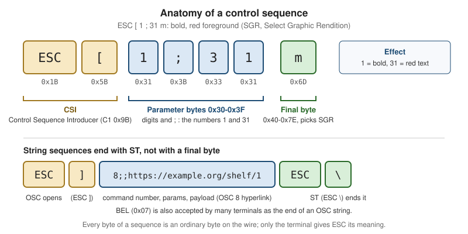

Escape Sequences & Terminal Capabilities
|
This content was generated with the assistance of AI and should be verified against the official documentation before being relied on in production. |
A terminal emulator is a program that draws characters in a grid and sends keystrokes back to whatever is attached to
its pseudo-terminal. Everything that is not "print this character" travels in band: the program writes ordinary
bytes, and a few of them, starting with ESC (0x1B), are interpreted by the terminal as commands instead of being
drawn. Colours, cursor movement, switching to a full-screen buffer, mouse reporting, hyperlinks and clipboard access
are all done this way, and so are the questions a program can ask the terminal. This page explains the vocabulary, the
sequences a command-line or full-screen tool really uses, the capability databases (TERM, terminfo) that describe
what a terminal understands, how wide a character is on screen, how Windows handles the same sequences, and why
untrusted text must never reach a terminal unfiltered.
It was written against ECMA-48 5th edition (identical to ISO/IEC 6429), the XTerm Control Sequences document,
the terminfo(5) manual of ncurses 6.6, Unicode Standard Annex #11 (revision 46, Unicode 18.0), the Kitty
keyboard and graphics protocol documents, and the Windows Console documentation, on Linux, macOS and Windows 10 and
later. The running scenario is the Bookshelf tool, shelf: the one-shot commands (shelf list), the interactive
shelf repl and the full-screen shelf tui catalogue browser all use the sequences described here. How the terminal,
the TTY driver and the shell fit together is covered on Terminals, TTYs & Pseudo-Terminals;
raw mode, which every interactive example below needs, is explained there. The Windows console API that exists beside
the sequences is covered on Windows Console & Processes.
Deciding whether to colour output (isatty, NO_COLOR, TERM=dumb, --no-color) is covered on
TTY, Colour & Interactivity and is not repeated here.
What is standard and what is not
The sequences fall into layers with very different levels of authority, and a portable program has to know which layer it is standing on.
| Layer | Source | Status |
|---|---|---|
Control functions: C0 and C1 sets, CSI, OSC, DCS, ST, cursor movement, erasing, SGR |
ECMA-48 (ISO/IEC 6429) |
International standard. The core of every terminal. The later sequences below are mostly not in it. |
DEC private modes ( |
De facto standard maintained by the xterm author. It documents what xterm does, and most other emulators copy a subset. |
|
OSC 8 hyperlinks, synchronized output (mode 2026), the Kitty keyboard and graphics protocols, |
Specifications written by terminal authors and published as documents or gists |
Community conventions. No standards body publishes them, and there is no detection mechanism guaranteed by a standard: a program probes, or reads environment variables, and falls back. |
Terminal descriptions ( |
terminfo(5) and the ncurses database |
A database of capabilities per terminal name. POSIX does not standardise the terminfo format. |
Character width |
Unicode UAX #11 and |
Advisory. Emulators, libraries and the C library can disagree, and the disagreement is visible as misaligned columns. |
The official documents do not provide a test that tells a program "this terminal supports hyperlinks" or "this terminal supports the Kitty keyboard protocol"; the practical techniques (environment variables, queries and terminfo extension entries) are described below and each has failure modes that are stated where they apply.
Anatomy of a control sequence
ECMA-48 divides the 8-bit code table into the C0 set (0x00 to 0x1F, among them BEL 0x07, BS 0x08, HT 0x09, LF 0x0A, CR 0x0D and ESC 0x1B), the graphic characters, and the C1 set (0x80 to 0x9F). A C1 function has a 7-bit form, an ESC followed by a byte in 0x40 to 0x5F, and that two-byte form is what programs emit.
| Function | 7-bit form | 8-bit C1 byte | Use |
|---|---|---|---|
CSI, Control Sequence Introducer |
|
0x9B |
Starts almost every cursor, erase, colour and mode sequence |
OSC, Operating System Command |
|
0x9D |
Starts a string command (title, hyperlink, clipboard) |
DCS, Device Control String |
|
0x90 |
Starts device strings (Sixel, XTVERSION reply) |
ST, String Terminator |
|
0x9C |
Ends OSC, DCS and APC strings |
APC, Application Program Command |
|
0x9F |
Carries the Kitty graphics protocol |
In a UTF-8 terminal a lone 0x9B byte is not a character, and U+009B is encoded as two bytes, so the C1 controls are
not reliably usable; always send the 7-bit forms. A control sequence has the shape ESC [, then optional
parameter bytes (0x30 to 0x3F: digits, ;, and the private-parameter markers ?, >, <, =), then optional
intermediate bytes (0x20 to 0x2F), then one final byte (0x40 to 0x7E) that selects the function. Omitted
parameters take a default, usually 0 or 1, which depends on the function. A string sequence (OSC, DCS, APC) runs
until ST; most terminals also accept BEL (0x07) as the end of an OSC string, which is how title sequences were
traditionally written.

Two properties follow from this design and recur in every section below.
-
A sequence is only bytes. The terminal gives ESC its meaning; a file, a pipe or a log that contains the bytes keeps them, and
catreplays them to the terminal. Usecat -vorod -cto look at what a program really emits. -
Terminals ignore what they do not understand, but not always cleanly. An unrecognised CSI with a valid shape is normally swallowed, yet a terminal that does not know a private mode may misparse the bytes and print part of the sequence as text. This is why probing is preferred over assuming, and why the examples query before they rely on an extension.
Writing sequences in source code
Source code writes ESC as \x1b (C, Rust, Python, Go, Swift), \u001b (Kotlin, Java, C#, JavaScript), \033
(C, shell printf) or \e (bash, GNU C). The sequences in this page’s tables are written with the mnemonics ESC
and CSI, and with spaces between the bytes for readability; the spaces are not sent. The Bookshelf shell session
below sends bold red text, then underlined text, and shows the real bytes:
$ printf '\033[1;31mOverdue\033[0m: \033[4mDune\033[24m\n' | cat -v
^[[1;31mOverdue^[[0m: ^[[4mDune^[[24mSource: XTerm Control Sequences and ECMA-48.
SGR: colour and text attributes
SGR, Select Graphic Rendition, is CSI Ps ; Ps ... m. Several parameters can share one sequence, and they are
applied left to right. CSI m with no parameter is the same as CSI 0 m, reset.
| Parameter | Meaning | Reset by |
|---|---|---|
|
Reset every attribute and colour |
- |
|
Bold or increased intensity, faint |
|
|
Italic |
|
|
Underline |
|
|
Blink (many emulators ignore or disable it) |
|
|
Reverse video, swap foreground and background |
|
|
Conceal. Dangerous with untrusted text, see the injection section |
|
|
Strike-through |
|
|
Foreground colour 0 to 7 (black, red, green, yellow, blue, magenta, cyan, white) |
|
|
Bright foreground colours (aixterm extension, not in ECMA-48) |
|
|
Background colours, normal and bright |
|
|
Foreground from the 256-colour palette (0 to 15 are the 16 colours, 16 to 231 a 6x6x6 cube, 232 to 255 a grey ramp) |
|
|
Background from the 256-colour palette |
|
|
Foreground in 24-bit colour ("truecolor") |
|
|
Background in 24-bit colour |
|
ITU T.416 and ECMA-48 define the extended colours with colons (38:2::r:g:b); real programs overwhelmingly send the
semicolon form shown above, and some emulators accept only that form. Extensions such as curly and coloured
underlines (4:3, 58;2;r;g;b) exist in several emulators, but they are not part of ECMA-48 and a terminal that
does not know them may render a plain underline or misparse the colon.
How a program decides how many colours to use
There are three sources, and all three are conventions rather than guarantees.
-
The
TERMterminfo entry.tput colorsprints thecolorsnumber: 8 forxterm, 256 forxterm-256color, -1 fordumb. This reports palette support only. -
COLORTERM. Thetermstandard/colorsconvention is thatCOLORTERM=truecolor(or24bit) means 24-bit colour is understood. It is a variable set by the emulator, so it is lost acrosssshunless the server accepts it (SendEnv/AcceptEnv) and acrosssudounless the environment is kept. -
Terminfo extensions. ncurses and tmux describe 24-bit support with the
RGBcapability (ncurses) orTc(tmux). Entries on the macOS system database that was queried while this page was written did not carry either, so terminfo alone under-reports truecolor there.
A defensive policy used by many tools: no colour when the output is not a terminal or NO_COLOR is set to a non-empty
value; 24-bit colour when COLORTERM is truecolor or 24bit; otherwise 256 colours when TERM ends in -256color;
otherwise the 16 base colours. Staying with the 16 base colours has one extra benefit: the user’s palette recolours
them, which matters for dark and light themes and for people who rely on a high-contrast scheme. Windows Terminal,
macOS Terminal and every Linux emulator honour a user-defined palette for 0 to 15 but not for 24-bit values.
Cursor movement, erasing and scrolling
Coordinates are 1-based, row first. Most movement parameters default to 1.
| Sequence | Name | Effect |
|---|---|---|
|
CUU, CUD, CUF, CUB |
Move up, down, forward (right), back (left) by n, stopping at the screen edge |
|
CUP |
Move to row r, column c. |
|
CHA |
Move to column n of the current row |
|
ED |
Erase from the cursor to the end of the screen, from the start to the cursor, the whole screen, the whole screen plus the scrollback (xterm extension) |
|
EL |
Erase to the end of the line, to the start, the whole line |
|
ICH, DCH, IL, DL |
Insert or delete n characters or lines |
|
SU, SD |
Scroll the scroll region up or down |
|
DECSTBM |
Set the scroll region to rows t to b |
|
DECSC, DECRC |
Save and restore cursor position and attributes |
|
DECTCEM |
Hide and show the cursor |
|
DECSCUSR |
Cursor shape: 0 or 1 blinking block, 2 steady block, 3 and 4 underline, 5 and 6 bar |
|
DSR |
Ask for the cursor position; the reply is |
Two warnings come with this table. A cursor that is hidden must be shown again on every exit path, including a panic,
a signal and an error; a program that dies with the cursor hidden leaves the user’s shell without one. And the
position CSI s and CSI u (save and restore) pair collides with DECSLRM in terminals that implement left and
right margins and with the Kitty keyboard protocol, whose reports also end in u, so prefer ESC 7 and ESC 8.
Writing at the last column is a classic trap. A terminal that has written a character in the last column sets a
pending wrap flag instead of moving to the next line; the next printable character then wraps. A program that
computes positions assuming the cursor is already on the next line misplaces its output by one row. Emulators agree
on this behaviour (it is the xenl capability in terminfo), but not on what a following cursor-movement sequence does
to the pending flag, which is why full-screen programs address cells with CUP instead of relying on wrapping.
The alternate screen
A full-screen program should not scribble over the user’s scrollback. DEC private modes 47, 1047 and 1049 switch
to an alternate screen buffer that has no scrollback, and switch back on exit. Use 1049: it saves the cursor, switches
buffers and clears the alternate screen on entry, and restores the cursor on exit, which is also what the terminfo
smcup / rmcup capabilities do for xterm-256color.
| Sequence | Effect |
|---|---|
|
Save the cursor and enter the alternate screen, cleared |
|
Leave the alternate screen and restore the cursor |
|
Older variants without the cursor save (1047 clears on exit) |
The full-screen entry and exit order that the Bookshelf catalogue browser uses is: enter raw mode, enter the alternate
screen, hide the cursor, enable bracketed paste, enable mouse and focus reporting, draw. On exit, undo everything in
reverse order. Programs that are interrupted (SIGINT, SIGTERM, SIGHUP, a panic, SIGTSTP on suspend) must run the
same restore code; the C and Python examples below show an atexit and try / finally shape. The signal and exit
mechanics are covered on POSIX Processes, Signals & I/O.
Pitfalls: output that a program prints while on the alternate screen vanishes when the screen is left, so error
messages and the final result must be printed after leaving it. Terminals reached through tmux or screen honour
the same mode, and some emulators offer a setting that turns the alternate screen off, so scrolling the mouse wheel
inside a full-screen program may scroll the primary buffer unless mouse reporting is enabled.
Input reporting: mouse, bracketed paste and focus
Several private modes ask the terminal to send more information on the program’s input. They are set with
CSI ? Pm h and reset with CSI ? Pm l, and each one changes the bytes that arrive on standard input, so a
program that enables one must be ready to parse its reports.
| Mode | Name | Effect |
|---|---|---|
|
Normal tracking |
Report button press and release |
|
Button-event tracking |
Also report motion while a button is held (drag) |
|
Any-event tracking |
Report all motion, with or without a button. Highest traffic |
|
Focus reporting |
|
|
SGR mouse encoding |
Use the |
|
Legacy UTF-8 and urxvt encodings |
Superseded by 1006; do not use in new code |
|
Bracketed paste |
Wrap pasted text in |
Mouse tracking (SGR 1006)
The original encoding sent three bytes after CSI M, each offset by 32, which fails past column 223 and cannot
report a release for a specific button. Enable a tracking mode and 1006: CSI ? 1002 h then CSI ? 1006 h. Each
event then arrives as CSI < b ; x ; y M for a press or motion, or m for a release, with 1-based cell coordinates.
The button code b is built from bits:
| Bits | Meaning |
|---|---|
|
Button: 0 left, 1 middle, 2 right, 3 none (motion with no button) |
|
Shift, Meta (Alt), Control were held |
|
This is a motion event |
|
Wheel: |
import re
SGR_MOUSE = re.compile(rb"\x1b\[<(\d+);(\d+);(\d+)([Mm])")
def parse_mouse(data: bytes):
"""Yield (event, button, col, row) for each SGR (1006) mouse report in data."""
for m in SGR_MOUSE.finditer(data):
code, col, row = int(m[1]), int(m[2]), int(m[3])
event = "release" if m[4] == b"m" else ("motion" if code & 32 else "press")
if code & 64:
button = "wheel-up" if code & 3 == 0 else "wheel-down"
else:
button = ("left", "middle", "right", "none")[code & 3]
yield event, button, col, row
print(list(parse_mouse(b"\x1b[<0;12;5M\x1b[<0;12;5m\x1b[<64;3;4M\x1b[<35;7;7M")))This parser was run under Python 3.9 and prints [('press', 'left', 12, 5), ('release', 'left', 12, 5), ('press', 'wheel-up', 3, 4), ('motion', 'none', 7, 7)]. A real program reads from a
terminal in raw mode and must also handle a report split across two read calls; the
terminals page explains why.
While mouse tracking is on, the terminal no longer lets the user select text with the mouse; most emulators allow Shift+drag (or Option+drag on macOS Terminal and iTerm2) to bypass reporting. Mention that in the tool’s help.
Bracketed paste (2004)
Without bracketed paste, text pasted into a raw-mode program is indistinguishable from typing: a pasted newline runs a
command, and a pasted tab triggers completion. With CSI ? 2004 h the terminal sends CSI 200 ~, the text, and
CSI 201 ~. A prompt such as shelf repl can then insert the text verbatim and never execute it. Disable the mode
on exit, because a shell that inherits it will show ^[[200~ on the next paste. Two caveats: a malicious paste may itself
contain the end marker CSI 201 ~ to escape the bracket (a program that handles paste input should remove it from the pasted text), .
Synchronized output (mode 2026)
Redrawing a large screen as many small writes can show tearing, with half of the old frame and half of the new. Mode
2026, defined by the community document contour-terminal/vt-extensions, brackets one frame: the terminal buffers
everything between the two sequences and presents it at once.
| Sequence | Meaning |
|---|---|
|
Begin synchronized update |
|
End synchronized update and present the frame |
|
DECRQM: is the mode supported? Reply |
Terminals that do not know the mode ignore the sequences, so sending them unconditionally is common; checking the
DECRQM reply (see the query section) avoids relying on that. A frame should stay short: terminals impose a timeout
and flush the buffer if the end sequence never arrives, but the length of that timeout is an implementation choice
that the specification does not fix. Because the pair costs a few bytes per frame it is sensible for full-screen
redraws, not for every shelf list line. This is a community convention; it is not in ECMA-48 or in the XTerm document.
OSC: title, hyperlinks and clipboard
An OSC sequence is ESC ] Ps ; Pt ST, where Ps is a command number and Pt its payload. Use ST (ESC \); BEL
works in most emulators but ST is the standard terminator.
| OSC | Purpose | Notes |
|---|---|---|
|
Set the icon and window title, or only the window title |
In xterm family terminals. A matching query of the title reflects text back to the program, which is why many terminals disable it |
|
Hyperlink |
Community specification (egmontkob gist) |
|
Read or write the clipboard |
Described in the XTerm document; heavily restricted by many emulators |
OSC 8 hyperlinks
The community specification defines OSC 8 ; params ; URI ST to start a link and OSC 8 ; ; ST (an empty URI) to end
it. Text written between them is clickable, with a modifier key in most emulators. The only widely used parameter is
id=value, which lets a link that is broken across several lines (or across several cells of a table) be recognised as one
link on hover. Terminals that do not understand OSC 8 are expected to ignore the sequence and show the text only, but a tool
still should not rely on that: print links only when the output is a terminal, and print the visible text and the URL
separately otherwise.
#define ESC "\x1b"
#define OSC ESC "]"
#define ST ESC "\\"
/* "details" is shown; the URI is only sent as metadata. */
fputs(OSC "8;;https://example.org/shelf/1" ST "details" OSC "8;;" ST "\r\n", stdout);Source: Hyperlinks in Terminal Emulators (community specification).
Security notes: the visible text and the URI are independent, so a link can read https://bank.example and lead
elsewhere. Terminals typically show the real URI on hover, and sensible ones refuse to open schemes other than a short
allowlist, but a tool that links text it did not write (a book title from a catalogue, a git commit message) must
never build the URI from that text without validating it, and must strip OSC from the text itself (see the injection
section). The specification discusses limits on the URI length; check it before emitting long URIs.
OSC 52: clipboard
OSC 52 ; Pc ; Pd ST writes to the clipboard when Pd is base64 text: Pc selects the selection (c clipboard,
p primary, s select), and a payload of ? asks the terminal to report the clipboard. Its value is that a program
running on a remote host over ssh can copy to the user’s local clipboard, because the sequence travels back through
the connection (and through tmux when its set-clipboard option allows it).
$ printf '\033]52;c;%s\033\\' "$(printf '978-0441013593' | base64)"That line copies the ISBN 978-0441013593 to the clipboard of a terminal that allows OSC 52 writes. Many do not by
default, and reading the clipboard is disabled almost everywhere, because any program (or any text it prints) could
otherwise exfiltrate or replace what the user copied. Make a tool’s use of OSC 52 explicit, off unless the user opts
in, and never write clipboard data that came from untrusted input.
Source: XTerm Control Sequences — OSC 52. The shell line above was not run against a terminal that supports OSC 52 while this page was written.
The Kitty protocols
Kitty defined two extensions that other emulators (among them Ghostty, WezTerm, iTerm2 and foot, at different levels of completeness) have adopted. Both are community specifications, so detect them by querying and degrade quietly.
Keyboard protocol
The legacy keyboard encoding cannot distinguish Tab from Ctrl+I, Enter from Ctrl+M, Escape from the start of a sequence,
or report key release. The Kitty keyboard protocol fixes this by sending CSI unicode-key-code ; modifiers u and a
set of progressive-enhancement flags that a program pushes onto a stack and pops on exit.
| Sequence | Meaning |
|---|---|
|
Push the enhancement flags onto the stack |
|
Pop n entries (default 1) |
|
Query the current flags; the reply is |
The flags are bits: 1 disambiguate escape codes, 2 report event types (press, repeat, release), 4 report alternate
keys, 8 report all keys as escape codes, 16 report associated text. The modifier value is 1 plus a bitmask (shift 1,
alt 2, ctrl 4, super 8 and further). Pop what was pushed: a program that exits with the flags still on leaves the
shell receiving u-style reports that the shell does not understand. How libraries expose it (for example the
Ratatui / crossterm option that requests enhanced keyboard events) is covered on the TUI pages; on Windows,
crossterm and similar libraries read the console input records instead.
Source: Kitty keyboard protocol.
Graphics protocol and Sixel
Images are rarer in the Bookshelf tool, but a book cover browser is the obvious use. The Kitty graphics protocol
sends an APC sequence, ESC _ G key=value,... ; base64-payload ESC \, with the payload split into chunks of at most
4096 bytes (m=1 on all but the last chunk). a=T transmits and displays, f=100 says the data is PNG, and the
terminal places the image at the cursor. Sixel is older, DCS q ... ST, a raster of six-pixel-tall bands that the
VT340 manual archived on vt100.net documents; a terminal announces support as attribute 4 in its DA1 reply. Neither
protocol is universal, images do not survive piping through less, and tools such as tmux must be configured to pass
them through, so a tool should offer a text fallback and a flag to turn images off.
Asking the terminal
A terminal answers some control sequences by writing a reply on its output, which arrives on the program’s input as if
the user had typed it. That is how a program discovers what it is talking to without trusting TERM.
| Request | Name | Reply |
|---|---|---|
|
DA1, primary device attributes |
|
|
DA2, secondary device attributes |
|
|
XTVERSION |
A DCS string: the name and version, for example |
|
DECRQM, request private mode |
|
|
DSR, cursor position |
|
|
Window size in characters |
|
|
Window size in pixels |
|
|
Kitty keyboard flags |
|
A robust probe follows three rules. First, put the terminal in raw mode (no echo, no line buffering), or the reply is echoed and shows on the screen. Second, use a timeout, because a pipe, a dumb terminal or a slow link never answers. Third, send DA1 last as a sentinel: every terminal that understands queries at all answers DA1, so when the DA1 reply arrives, any query sent before it that has not been answered is known to be unsupported. Only probe when both standard input and output are a terminal; a program run from a script, an agent or a pipeline must never block waiting for a reply.
import os
import re
import select
import sys
import termios
import tty
MODE_STATE = {b"0": "not recognised", b"1": "set", b"2": "reset",
b"3": "permanently set", b"4": "permanently reset"}
def query(fd_in, fd_out, request, final, timeout=0.3):
"""Send a query and read until the reply ends with `final` or the timeout expires."""
os.write(fd_out, request)
reply = b""
while select.select([fd_in], [], [], timeout)[0]:
reply += os.read(fd_in, 256)
if reply.endswith(final):
break
return reply
def main():
fd_in, fd_out = sys.stdin.fileno(), sys.stdout.fileno()
if not (os.isatty(fd_in) and os.isatty(fd_out)):
sys.exit("shelf probe: needs a terminal on stdin and stdout")
saved = termios.tcgetattr(fd_in)
try:
tty.setraw(fd_in)
da1 = query(fd_in, fd_out, b"\x1b[c", b"c")
xtversion = query(fd_in, fd_out, b"\x1b[>0q", b"\x1b\\")
sync = query(fd_in, fd_out, b"\x1b[?2026$p", b"y")
finally:
termios.tcsetattr(fd_in, termios.TCSADRAIN, saved)
print("DA1 :", da1)
print("XTVERSION :", xtversion)
m = re.search(rb"\?2026;(\d)\$y", sync)
print("mode 2026 :", MODE_STATE[m.group(1)] if m else "no answer")
main()This probe compiles under Python 3.9 and exits with the message above when it is not attached to a terminal. The replies from a live terminal were not exercised while this page was written, so the sequential three-query shape (rather than the sentinel pattern described above) is deliberately simple. A production version sends all queries followed by DA1 and parses the replies as they arrive.
Source: XTerm Control Sequences — Functions using CSI and DCS and the Python termios module.
Replies are a security boundary as well as a feature: because they arrive on standard input, text that makes a terminal emit a reply can inject keystrokes into whatever reads the terminal next. This is the reason several terminals refuse to answer title or clipboard queries, and one more reason to filter untrusted output.
TERM, terminfo and termcap
TERM names the terminal’s type, and the terminfo database maps that name to a list of capabilities: booleans
(am, xenl), numbers (colors, cols) and strings with parameters (cup, setaf, smcup). The older termcap
format is superseded; ncurses implements both lookups from the terminfo files. A program that uses
ncurses, notcurses, tput or termwiz reads terminfo; many other libraries do not read it at all and emit xterm-style
sequences directly, so TERM only decides colour depth for them.
$ tput -Txterm-256color colors
256
$ tput -Txterm-256color cup 5 10 | cat -v
^[[6;11H
$ tput -Txterm-256color setaf 1 | cat -v
^[[31m
$ tput -Txterm-256color sgr0 | cat -v
^(B^[[m
$ tput -Tdumb colors
-1
$ infocmp -1 xterm-256color | grep -E '^\s(cup|smcup|rmcup|setaf|sgr0)='
cup=\E[%i%p1%d;%p2%dH,
rmcup=\E[?1049l,
setaf=\E[%?%p1%{8}%<%t3%p1%d%e%p1%{16}%<%t9%p1%{8}%-%d%e38;5;%p1%d%;m,
sgr0=\E(B\E[m,
smcup=\E[?1049h,The session was captured on macOS with ncurses 6.0 tools; the capability strings are the same on current ncurses releases
for these entries, though the system database is older than the 6.6 sources documented at the source link. Note that
cup 5 10 is zero-based on the command line and the terminal sequence is 1-based (6;11), and that sgr0 also selects
the US-ASCII character set (ESC ( B), a reset that a plain CSI 0 m does not perform.
| Command or variable | Purpose |
|---|---|
|
Print one capability, expanded with the parameters, or a number or boolean |
|
Use terminal type |
|
Print a terminfo entry in source form; |
|
Compile an entry into the database, list the entries that exist |
|
Directories searched before |
|
Terminal type, 24-bit hint, size overrides ( |
Common values of TERM: xterm-256color (the safe default, claimed by nearly every emulator), tmux-256color or screen-256color inside a
multiplexer, linux for the Linux virtual console, xterm-kitty and xterm-ghostty for those emulators, and dumb
for output that must stay plain.
Pitfalls:
-
A
TERMthat the machine has no entry for (typically a newer emulator reached overssh) breakstput,clearand ncurses programs with "unknown terminal type". The fix is to install the entry on the remote host (infocmp -x $TERM | ssh host tic -x -) or to export a common value such asxterm-256colorfor that session. -
Multiplexers rewrite
TERM, so an application that checks onlyCOLORTERMmay lose its truecolor hint insidetmux. -
Hard-coding sequences ignores terminfo; reading terminfo ignores that real terminals deviate from it. Pick one and test on the targets, including the Linux console and Windows Terminal.
-
Terminfo describes capabilities that the entry’s author believed true; it does not describe the live terminal. An entry cannot say whether a mode such as 2026 is available, which is why query mechanisms exist.
Source: terminfo(5) and the ncurses terminfo database.
Unicode display width
A terminal is a grid of cells. The program must know how many cells a string takes, or it cannot align a table, truncate a title or place the cursor after a wide character. A code point occupies zero, one or two cells:
-
Combining marks and zero-width characters take 0 cells (
wcwidthreturns 0). -
Most scripts, including Latin, take 1.
-
East Asian Wide and Fullwidth characters, and most emoji, take 2. UAX #11 classifies code points as F, W, Na, H, N or A; F and W take 2 cells.
-
Ambiguous (A) characters such as the plus-minus sign are 1 cell in a Western context and 2 in an East Asian one. An emulator setting or the locale decides, and a program can neither detect nor override it.
The POSIX wcwidth and wcswidth functions return the column count for a wide character or string, subject to the
current locale (setlocale(LC_ALL, "") is required in C first). They deal in code points, not user-perceived
characters: an accented letter written as a base letter plus a combining mark, or an emoji family joined with
zero-width joiners, is several code points that form one grapheme cluster.
#define _XOPEN_SOURCE 700
#include <locale.h>
#include <stdio.h>
#include <wchar.h>
int main(void) {
setlocale(LC_ALL, "");
const wchar_t *samples[] = {
L"Dune", L"书架", L"é", L"é", L"\U0001F4DA",
L"\U0001F468\U0001F469\U0001F467", L"±",
};
for (size_t i = 0; i < sizeof samples / sizeof *samples; i++)
printf("%2d columns, %2zu code points\n", wcswidth(samples[i], 64), wcslen(samples[i]));
return 0;
}Compiled with Apple clang and run with LC_ALL=en_US.UTF-8 on macOS, it prints:
4 columns, 4 code points
4 columns, 2 code points
1 columns, 2 code points
1 columns, 1 code points
2 columns, 1 code points
6 columns, 5 code points
1 columns, 1 code pointsThe first line is ASCII, the second two Chinese characters (two cells each), the third and fourth the same
letter written with a combining accent and as a single code point, the fifth a books emoji, the sixth a family emoji
(three emoji joined with zero-width joiners, 5 code points) and the last the ambiguous plus-minus sign. The sixth line
shows the central disagreement: wcswidth sums the three emoji to 6 cells, while an emulator that renders the sequence
as one family glyph uses 2. Some terminals implement a community "grapheme clustering" mode (DEC private mode 2027, documented in the same
vt-extensions repository as synchronized output), and a DECRQM query (CSI ? 2027 $ p) reveals whether the terminal
knows it. Python’s unicodedata.east_asian_width() returns the UAX #11 class (W for
the Chinese character and the emoji, A for the plus-minus sign, Na for ASCII), and unicodedata.combining() flags
combining marks, but neither produces cell widths on its own.
Source: Unicode UAX #11: East Asian Width and POSIX wcwidth.
Pitfalls for the Bookshelf tool: truncate and pad titles by cells using a width-aware library for the language in use
(for example unicode-width for Rust, go-runewidth or uniseg for Go, wcwidth for Python), never by bytes or
len; avoid putting emoji in table cells that must stay aligned, because the emulator’s width for the same sequence
varies between versions; and never assume the width of a character the font lacks, since the terminal may draw a
fallback glyph over several cells.
Windows: virtual-terminal sequences
Windows 10 and later support the sequences above, with a smaller set than xterm, through the console virtual-terminal
(VT) processing. Microsoft’s guidance is to use VT sequences for all new development instead of the classic console
API, and to keep the classic calls (SetConsoleMode, SetConsoleCP, SetConsoleOutputCP, SetConsoleCtrlHandler,
ReadConsoleInput for window resize) where there is no sequence equivalent. VT processing is a mode flag: a program has
to switch it on for the output handle, and should switch it back on exit.
| Mode flag | Effect |
|---|---|
|
The console interprets the output sequences |
|
A line feed no longer implies a carriage return, as on a Unix terminal |
|
Key presses arrive as VT sequences on the input stream; the VT page lists which input sequences are generated |
#include <windows.h>
#include <stdio.h>
int main(void) {
HANDLE out = GetStdHandle(STD_OUTPUT_HANDLE);
DWORD mode = 0;
if (out == INVALID_HANDLE_VALUE || !GetConsoleMode(out, &mode)) {
/* Not a console (redirected): print plain text. */
puts("Dune");
return 0;
}
DWORD saved = mode;
SetConsoleOutputCP(CP_UTF8);
if (SetConsoleMode(out, mode | ENABLE_VIRTUAL_TERMINAL_PROCESSING)) {
puts("\x1b[1;31mOverdue\x1b[0m: Dune");
} else {
puts("Overdue: Dune"); /* an old console: no VT, stay plain */
}
SetConsoleMode(out, saved);
return 0;
}This example uses windows.h, so it was not compiled on the macOS host used to write this page; check it on a Windows
toolchain. GetConsoleMode failing is the Win32 way of asking "is this a console?", the counterpart of isatty; it
fails when the handle is a pipe or a file. SetConsoleOutputCP(CP_UTF8) makes the console accept UTF-8 text; a
program can instead embed the activeCodePage UTF-8 manifest setting (Windows 10 version 1903 and later).
Source: Console Virtual Terminal Sequences and SetConsoleMode.
Differences to plan for:
-
The set of supported sequences is what Microsoft’s VT page lists. Extensions that rely on terminal-side features that the console host does not implement (for example the Kitty protocols or OSC 52 behaviour) depend on the terminal in front of ConPTY, not on Windows itself, so probe instead of assuming.
-
Terminal emulators such as Windows Terminal talk to console programs through the pseudo console (ConPTY,
CreatePseudoConsole, Windows 10 version 1809 and later), which translates between the application’s console and a VT stream; see Windows Console & Processes for it. -
Do not rely on VT processing being on already: set the flag, check that
SetConsoleModesucceeded, and keep a plain-text path for consoles that reject it. -
TERMis normally unset on Windows. Test whether the handle is a console and whetherSetConsoleModeaccepts the flag instead of looking forTERM. -
The classic Console API remains the supported way to read window resize events (
ReadConsoleInput).
Libraries hide this: crossterm, Bubble Tea, Textual, Terminal.Gui and others enable the flags on startup. A program written
directly against sequences, such as the shelf examples above, has to do it itself.
Escape-sequence injection
The sequences are an input language of the terminal, so any program that writes text it did not produce itself (a book title or note read from a shared catalogue, a git commit message, a filename, an error from a remote server, the output of a subprocess, a log line) can control the user’s terminal by embedding ESC bytes. What an attacker can do with a hostile string:
| Technique | Effect |
|---|---|
|
Erase or overwrite lines already printed, so a warning appears to say something else |
SGR |
Hide text that a copy and paste or a reviewer will still see |
|
Change the window title; a reply may reach the shell as keystrokes |
|
Replace the clipboard with a command, which the user then pastes |
|
Add a link whose label hides its destination |
Query sequences (DA1, DECRQM, CPR, title report) |
Make the terminal write bytes onto the shell’s input |
C1 byte |
A terminal in 8-bit mode treats them as a CSI that a filter looking for ESC misses |
Bidirectional controls such as U+202E |
Reorder visible text without any escape byte |
Printing a byte stream raw is the problem, and the fix is the same everywhere: sanitise at the output boundary. Drop
C0 controls except tab and the line terminator, drop DEL (0x7F) and the C1 range (when decoding UTF-8, U+0080 to U+009F),
and consider dropping the bidirectional override characters. Replace a stripped byte with a visible
placeholder if it must be noticed. Stripping only ESC leaves single-byte C1 forms and BEL-terminated strings
untouched, and stripping only the [ after ESC leaves a half-written string that the terminal keeps waiting on,
swallowing the output that follows.
The Bookshelf renderer used on this page does that in the C helper below and prints a hostile title as plain text:
#include <locale.h>
#include <stdio.h>
#include <stdlib.h>
#include <string.h>
#include <unistd.h>
#include <wchar.h>
#define ESC "\x1b"
#define CSI ESC "["
#define OSC ESC "]"
#define ST ESC "\\"
/* Print untrusted text: drop C0 (except tab), DEL and the C1 range
when the string is decoded as UTF-8 (U+0080..U+009F). */
static void put_safe(const char *s) {
mbstate_t st = {0};
size_t n = strlen(s);
while (n > 0) {
wchar_t wc;
size_t k = mbrtowc(&wc, s, n, &st);
if (k == (size_t)-1 || k == (size_t)-2) { putchar('?'); s++; n--; memset(&st, 0, sizeof st); continue; }
if (k == 0) break;
if (!((wc < 0x20 && wc != L'\t') || wc == 0x7f || (wc >= 0x80 && wc <= 0x9f)))
fwrite(s, 1, k, stdout);
s += k; n -= k;
}
}
int main(void) {
setlocale(LC_ALL, "");
int tty = isatty(STDOUT_FILENO);
const char *no_color = getenv("NO_COLOR");
int color = tty && !(no_color && *no_color);
const char *ct = getenv("COLORTERM");
int truecolor = color && ct && (!strcmp(ct, "truecolor") || !strcmp(ct, "24bit"));
if (tty) fputs(CSI "?1049h" CSI "?25l" CSI "?2004h" CSI "?2026h" CSI "2J" CSI "H", stdout);
if (color) fputs(CSI "1m", stdout);
fputs("Bookshelf", stdout);
if (color) fputs(CSI "0m", stdout);
fputs("\r\n", stdout);
const char *titles[] = { "Dune", "Neuromancer", "Hostile\x1b[2JTitle\x07" };
for (int i = 0; i < 3; i++) {
if (color && i == 1) fputs(truecolor ? CSI "48;2;28;75;115m" CSI "38;2;255;255;255m" : CSI "7m", stdout);
printf("%d. ", i + 1);
put_safe(titles[i]);
if (color) fputs(CSI "0m", stdout);
fputs("\r\n", stdout);
}
if (tty) {
fputs(OSC "8;;https://example.org/shelf/1" ST "details" OSC "8;;" ST "\r\n", stdout);
fputs(CSI "?2026l" CSI "?2004l" CSI "?25h" CSI "?1049l", stdout);
}
return 0;
}This program was compiled with Apple clang (clang -Wall -Wextra) without warnings. Run into a pipe it prints
plain text with the hostile title shown as Hostile[2JTitle, with the ESC and BEL bytes dropped, so the leftover
[2J is harmless text. Run inside a pseudo-terminal with COLORTERM=truecolor it emitted exactly this byte stream
(shown with the carriage returns the pseudo-terminal adds):
ESC[?1049h ESC[?25l ESC[?2004h ESC[?2026h ESC[2J ESC[H
ESC[1mBookshelf ESC[0m
1. Dune ESC[0m
ESC[48;2;28;75;115m ESC[38;2;255;255;255m 2. Neuromancer ESC[0m
3. Hostile[2JTitle ESC[0m
ESC]8;;https://example.org/shelf/1 ESC\ details ESC]8;;ESC\
ESC[?2026l ESC[?2004l ESC[?25h ESC[?1049lSpaces and line breaks above are added for readability. An unrelated limitation: the exit code path here is a normal
return; a real full-screen program also restores the terminal from signal handlers and atexit, as noted in the
alternate screen section. Rendering inside a live terminal emulator was not checked while this page was written.
Source: XTerm Control Sequences and POSIX mbrtowc.
Related defences apply when the consumer is a program rather than a person. The AI section covers output caps,
sanitisation of tool output and the argv discipline on
Security for CLIs, Output caps and sanitisation;
this page adds the terminal-specific detail. Tools that show someone else’s text, such as less, usually escape
control characters unless asked not to (less -R lets colour sequences through); cat -v and ls -b show them safely.
Pitfalls
-
Leaving the terminal in a bad state. The cursor hidden, mouse reporting on, bracketed paste on or the alternate screen entered after a crash makes the shell unusable until the user types
resetortput reset. Restore in every exit path. -
Emitting sequences to a non-terminal. Redirected output, logs and CI show
^[[1mgarbage; checkisattyfirst and honourNO_COLOR(see TTY, Colour & Interactivity). -
Assuming every emulator supports an extension. Probe (DECRQM, DA1, the Kitty flags query) and degrade.
-
Reading replies without raw mode or a timeout. The reply is echoed or the program hangs.
-
Counting bytes or code points as columns. Use a width library; test with CJK, combining marks and emoji.
-
Trusting
TERM. It is set by the parent and may be wrong or missing; a multiplexer orsshchanges it. -
Forgetting that
ESCalone is ambiguous. A bare ESC key and the start of a sequence look alike; programs wait a few tens of milliseconds, and the Kitty keyboard protocol removes the ambiguity. -
Printing untrusted text raw. Sanitise at the boundary (see the injection section).
References
-
terminfo(5) and the ncurses terminfo database
-
Community conventions, not standards: OSC 8 hyperlinks, synchronized output and related extensions, truecolor detection, NO_COLOR and FORCE_COLOR
-
Windows Console Virtual Terminal Sequences, SetConsoleMode, Classic console API versus virtual terminal sequences and CreatePseudoConsole